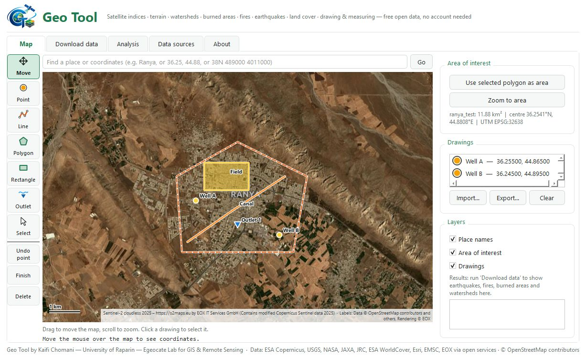
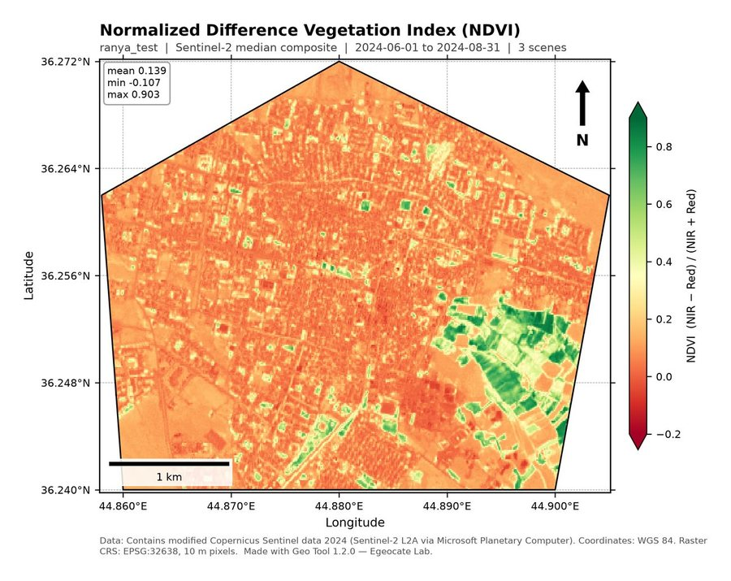
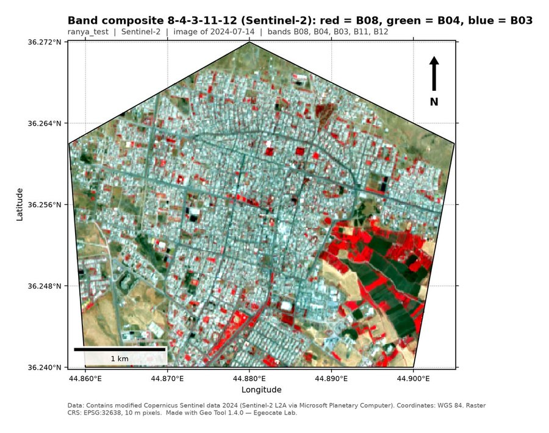
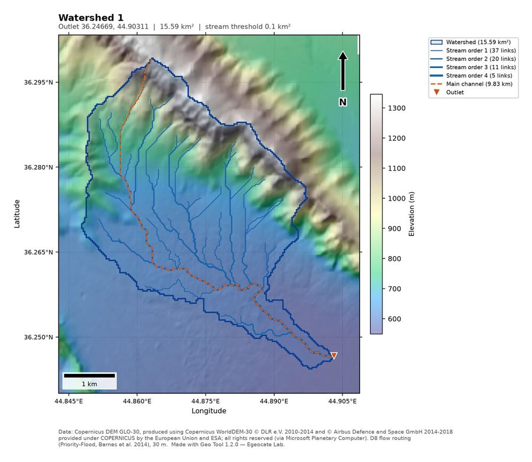
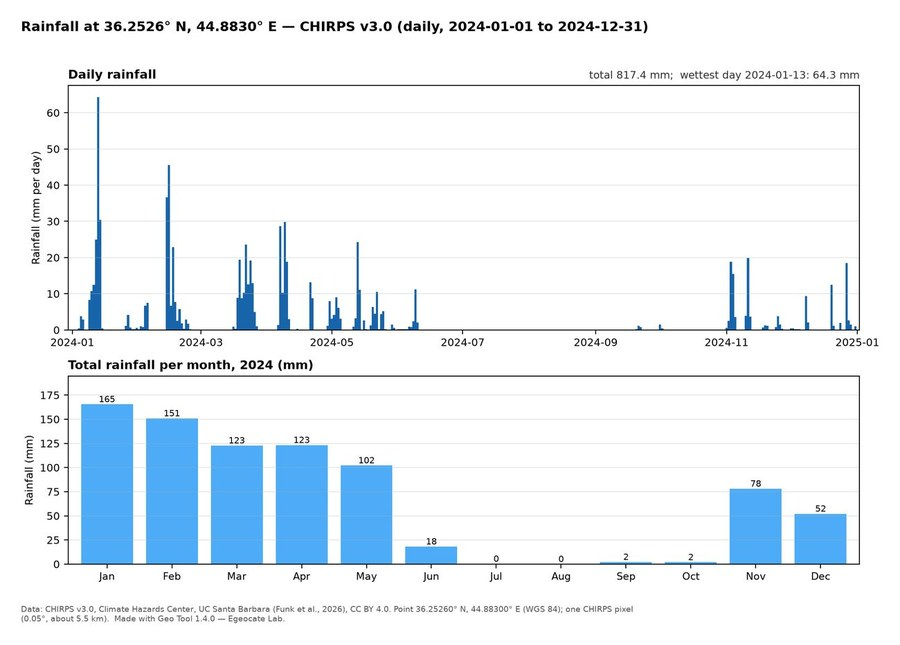
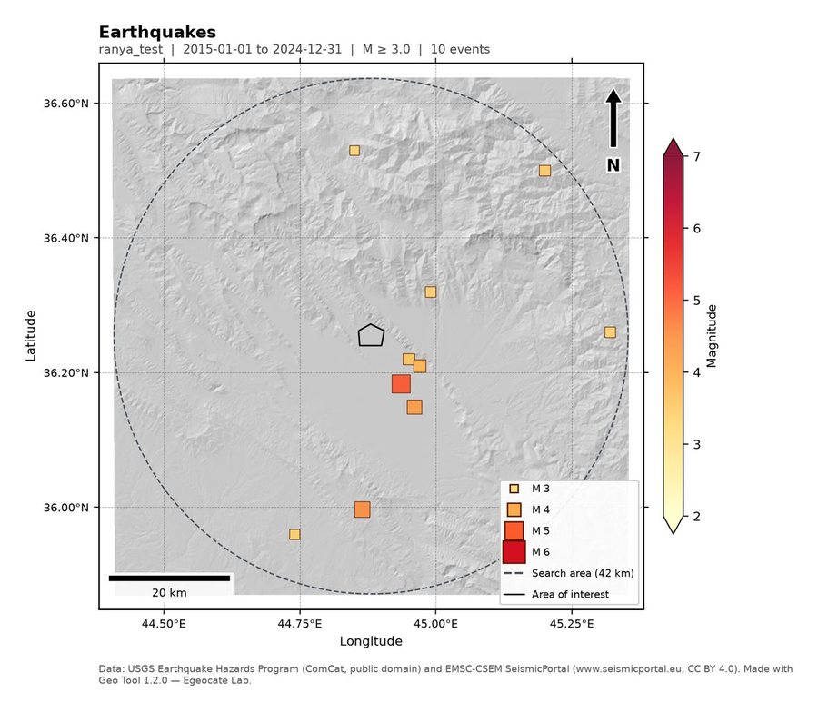
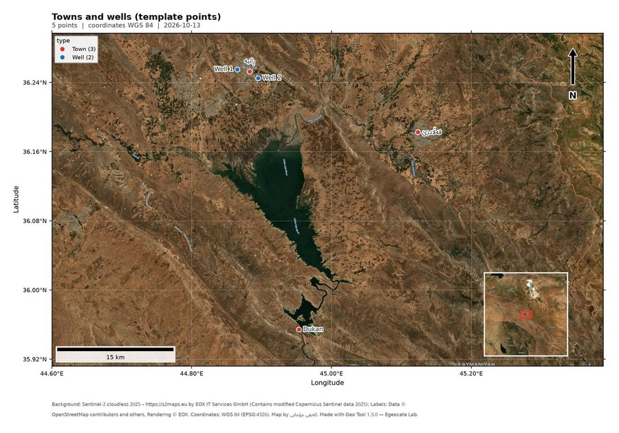

Satellite maps and data for any area you choose
Geo Tool is a free Windows program for students and researchers. Draw or load your study area, tick what you need, and it downloads open satellite and map data and makes ready-to-use maps with coordinates, GeoTIFFs and Shapefiles.
Download for Windows
What it makes
NDVI, NDWI, MNDWI, NDBI, SAVI, EVI and NBR from Sentinel-2 (10 m, 2017 to today) or Landsat (30 m, 1984 to today), for one period or every year.
The Sentinel-2 or Landsat bands you choose, listed by number and name, from the clearest image near your date, stacked in your order in one GeoTIFF with a colour map.
Elevation, slope, aspect and hillshade from the Copernicus, ALOS or NASADEM elevation models (30 m).
Click an outlet to get the catchment, streams by Strahler order, the main channel, morphometric parameters, the hypsometric curve and the time of concentration.
ESA WorldCover (2020 or 2021) and Esri land use maps (10 m, any year from 2017 to 2023), and the JRC history of surface water since 1984.
Daily or monthly CHIRPS rainfall since 1981 for any point you type or draw, as CSV tables with monthly and yearly totals and a chart.
Burned area and severity (dNBR, with your own threshold if you wish), active fires from NASA FIRMS, past fires from MODIS, and earthquakes from today back to 1900 from USGS and EMSC.
Building footprints, roads, rivers, lakes and points of interest from OpenStreetMap and Overture Maps.
Turn your own list of villages, wells or sample sites (Excel, CSV, KML or GPX) into a finished map, with names in English, Kurdish or Arabic on a satellite or white background.
Lengths, areas in m², hectares, km² and dunam, distances and coordinates in degrees and UTM. Every result is its own file: PNG maps with coordinates, scale bar and north arrow, GeoTIFF, GeoPackage, Shapefile and CSV.






Start in three steps
- Download and unzip
Download the zip file, right-click it and choose Extract All. Wait until unzipping has finished; GeoTool.exe is the last file to appear.
- Open Geo Tool
Open the GeoTool folder and double-click GeoTool.exe. If Windows says “Windows protected your PC”, click More info, then Run anyway. The program is free and not code-signed.
- Choose an area and press Run
Draw or load your area, tick what you need and press Run. Your maps and files are saved in a new folder on the Desktop.
Needs Windows 10 or 11 (64-bit) and an internet connection while it downloads data.
Updates
| Version | Date | What changed |
|---|---|---|
| 1.4.0 | Band composites with the bands you choose (Sentinel-2, Landsat 8–9, Landsat 4–7); CHIRPS rainfall at a point as CSV; land cover year choice; your own dNBR threshold for burned areas; settings that follow your ticks. Release notes | |
| 1.3.0 | Point maps: turn your own list of places (Excel, CSV, KML or GPX) into a finished map with names in English, Kurdish or Arabic. Coordinates in degrees-minutes-seconds and UTM are read too. Release notes | |
| 1.2.0 | First version on this page: satellite indices, terrain, watersheds, land cover and water, burned areas, fires and earthquakes, buildings and roads, and drawing and measuring on a satellite map. Release notes |
Created by Kaifi Chomani
Assistant Lecturer and Researcher in the Civil Engineering Department at the University of Raparin, and founder of Egeocate Lab for GIS & Remote Sensing.